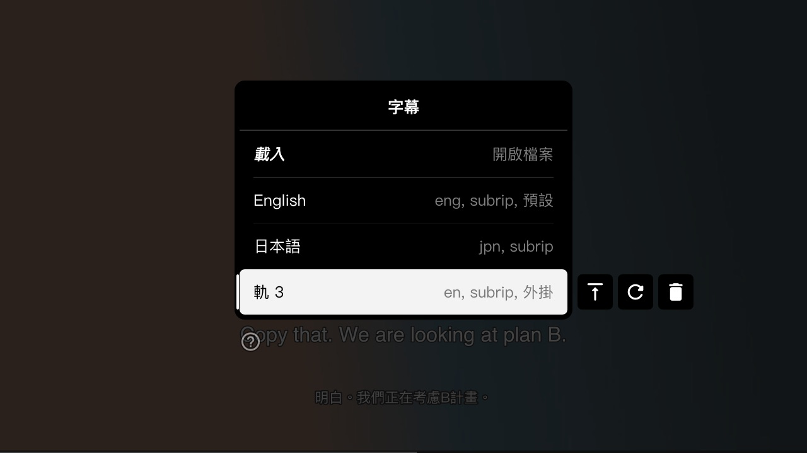

TWTOOLS · 開源影片播放器 · 預覽版 0.1.0
外語片，
一看就懂。
看懂是一個邊播邊翻譯字幕的影片播放器。外語片自動在原文字幕下方加上台灣繁中譯文；沒有字幕的片，先用語音辨識聽寫出字幕再翻譯。
翻譯用的是在你自己電腦上跑的開源模型，影片和字幕不會上傳到任何地方。免費、開源。
下載鈕永遠是最新版。舊版與更新紀錄在 GitHub Releases。
預覽版要先做一件事
播放器需要搭配一個你自己開的「翻譯伺服器」（免費的 llama.cpp＋騰訊 Hy-MT2 翻譯模型），第一次會下載約 4.6GB 的模型。下載包裡的「使用說明.txt」有一步一步的做法。之後的正式版會把伺服器內建進播放器，下載就能用。

01 · 能做什麼
把外語片變成雙語字幕
雙語字幕
外掛字幕（.srt／.ass／.vtt）或 mkv 內嵌字幕，自動在下方加上繁中譯文。整部片的字幕會先翻好，看的時候幾乎不用等。
沒字幕也能看
找不到文字字幕時，自動用語音辨識（whisper.cpp）聽寫出字幕，再翻成繁中。
台灣用語
翻譯針對台灣繁中調整過：口語、俚語用意譯，不是一個字一個字直翻。翻好的存在影片旁邊，重看不必再翻。
滑鼠就能操作
右鍵選單、底部控制列、字幕軌和音軌用滑鼠選；倍速 0.5x 到 3x，變速不變調。
02 · 畫面
看起來是這樣




03 · 怎麼開始
三個步驟
- 1
下載並解壓
Windows 解壓到任何地方即可；Mac 先用 Homebrew 裝好
mpv ffmpeg llama.cpp whisper-cpp。 - 2
開翻譯伺服器
照「使用說明.txt」開一個翻譯伺服器（第一次會下載模型）。伺服器可以和播放器在同一台電腦，也可以放在區網另一台。
- 3
把影片拖進去
Windows 把影片拖到
mpv.exe；Mac 雙擊「看懂.command」後把影片拖進視窗。字幕會自動變成雙語。
建議配備
- 記憶體 16GB（8GB 也能用，改用較小的 1.8B 模型）
- Mac：Apple 晶片（M1 以後）。實測 M4／16GB 每句約 1–1.5 秒（7B 模型），1.8B 約 0.25 秒
- Windows：64 位元 Windows 10／11；有獨立顯示卡會快很多
04 · 常見問題
常見問題
要錢嗎？
不用。看懂是 MIT 授權的開源軟體；翻譯模型 Hy-MT2 是 Apache-2.0，llama.cpp、whisper.cpp 都是 MIT，全部免費。
影片或字幕會被上傳嗎？
不會。翻譯和語音辨識都在你自己開的伺服器上跑（同一台電腦或你家區網裡的電腦），播放器不連任何雲端服務。
可以看 Netflix 之類的串流嗎？
不行。看懂只播你電腦裡的影片檔，刻意不下載字幕、不攔截串流、不破解 DRM。
翻得準嗎？
一般對話、口語和俚語大多翻得自然；已知的限制是人名常被音譯（例如 Marcus 變成「馬庫斯」），之後會做譯名修正。機器翻譯難免出錯，重要內容請以原文為準。
為什麼還要自己開伺服器？
預覽版先把播放和翻譯體驗做好，翻譯模型另外跑。正式版會讓播放器自己在背景啟動模型、第一次啟動時只下載需要的模型，之後完全離線使用。
哪裡回報問題？
到 GitHub Issues 開一則，附上作業系統、影片格式和畫面左上角出現的訊息會最快。